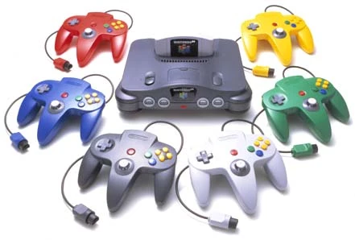

Nintendo is a global leader in the gaming industry, known for creating innovative
video game consoles, handheld devices, and beloved franchises. Founded in Japan in
1889, the company shifted its focus to video games in the 1980s, producing iconic
consoles like the NES, Game Boy, Wii, and Nintendo Switch. Nintendo's extensive catalog
includes some of the most popular games in history, such as Super Mario, The Legend of Zelda,
and Pokémon. Renowned for its creativity, family-friendly content, and engaging gameplay experiences,
Nintendo continues to shape the future of gaming.
Click here for more Information
First Device
|
 |
||

The Legend of Zelda 
Super Mario World 
Donkey Kong Country 
Super Mario Kart |
|||
Second Device
|
 | ||

Super Mario 64 
Mario Kart 64 
GoldenEye 007 
The Legend of Zelda |
|||
Third Device
|
 |
||

Super Smash Bros 
Mario Kart 
The Legend of Zelda 
Luigi's Mansion |
|||